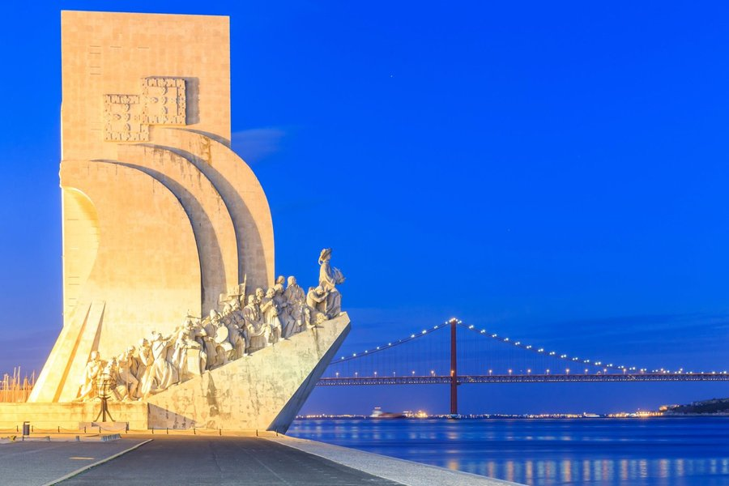
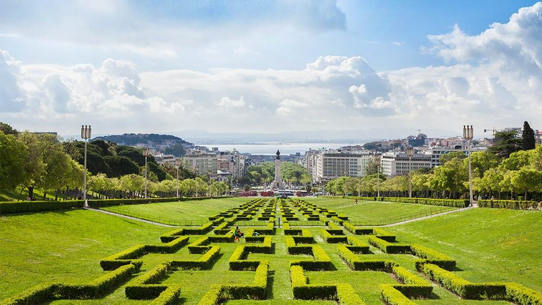
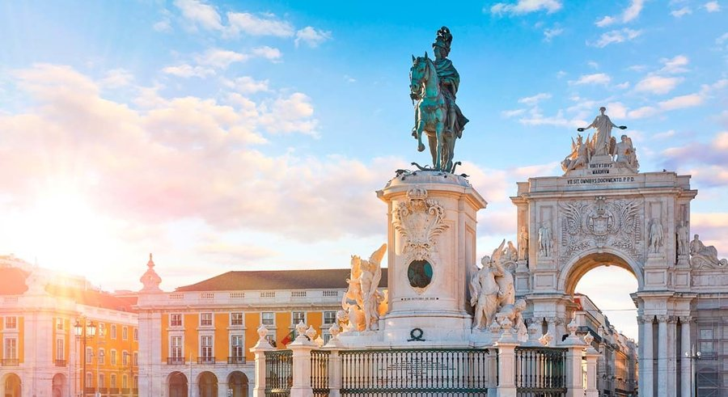
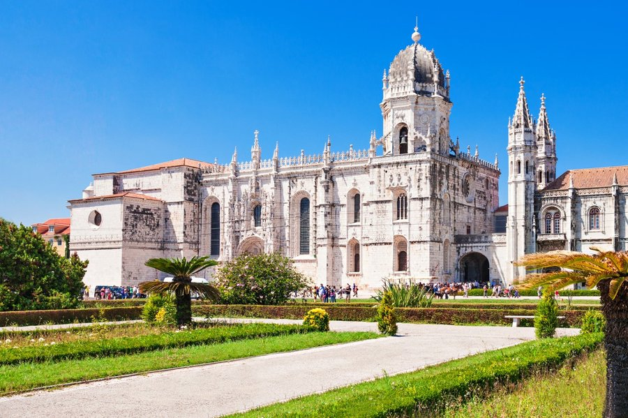
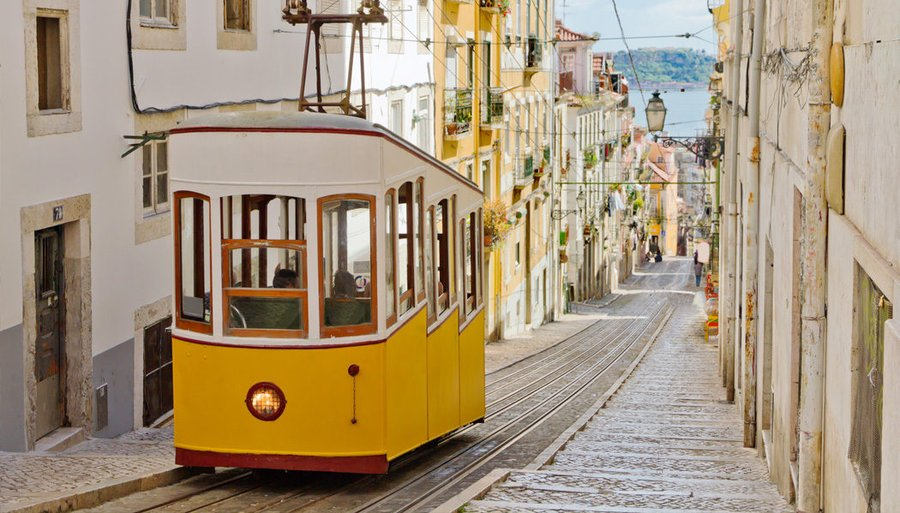
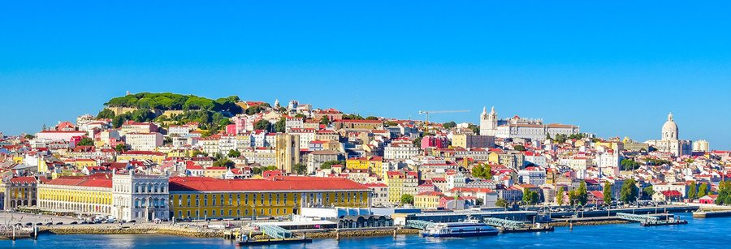

Tours Exclusivos · Guia Especializado · Desde 2018
Experiências únicas e personalizadas para quem quer ver muito além das fachadas. Tours privados guiados por quem ama e vive Portugal.
Rolar
Fundada em
Lisboa
Sobre Nós
A Book 'N Pin nasceu da paixão genuína por Portugal — sua história, gastronomia, e a alma calorosa do seu povo. Fundada em 2018, criamos experiências turísticas receptivas para brasileiros que querem muito mais do que os roteiros tradicionais.
Nosso guia e fundador, Hermes Fernandez, conhece Portugal como a palma da mão. Com fluência total no português brasileiro e um conhecimento profundo da cultura local, ele transforma cada tour em uma memória inesquecível.
"Portugal não é apenas um destino. É uma transformação."
Nossos Tours
Lisboa · Dia Inteiro
De Belém ao Alfama, descubra os segredos da capital com um guia que viveu cada beco e cada miradouro.
Solicitar →Porto · Gastronomia
Um mergulho na culinária portuense: francesinhas, vinho do Porto e as tascas que os locais frequentam.
Solicitar →Sintra · Dia Inteiro
Roteiro completo pelos palácios encantados de Sintra, com paradas em Cascais e na Costa.
Solicitar →Lisboa · Histórico
Belém, o Mosteiro e o Padrão dos Descobrimentos — a história de Portugal ao pé de monumentos icónicos.
Solicitar →Lisboa · Privado
Você escolhe os pontos, nós criamos o roteiro perfeito. 100% privado e adaptado ao seu interesse.
Solicitar →Lisboa · Gastronomia
Pastéis de Belém, petiscos, marisco e os melhores restaurantes que os guias de viagem nunca listaram.
Solicitar →Destinos
Capital · Alfama · Belém · Baixa
Ribeira · Caves de Vinho · Douro
Palácios · Cascais · Costa
Santuário · Batalha · Atlântico





Como Funciona
01.
Selecione um de nossos roteiros ou nos conte o que você quer ver. Personalizamos cada detalhe para o seu perfil de viajante.
02.
Após o contato, enviamos todos os detalhes: ponto de encontro, horário, o que incluir na mochila e o que esperar do dia.
03.
No dia, você tem um guia dedicado ao seu grupo. Nada de turmas grandes — apenas você, sua família e Portugal.
04.
Receba dicas de restaurantes e sugestões personalizadas para aproveitar ao máximo o restante da sua viagem.

"Venha comigo que eu te levo a conhecer todos os encantos deste paraíso na Terra."
— Hermes Fernandez, Fundador
Depoimentos
"O Hermes é um guia incrível. Conhece cada detalhe de Lisboa, conta histórias que prendem a atenção e ainda levou a gente para um restaurante que nunca acharíamos sozinhos. Simplesmente perfeito."
"Já fui a Portugal três vezes e nunca tinha vivido algo assim. O tour de Sintra foi mágico. Fomos em família e o passeio foi pensado para cada um de nós. Recomendo muito."
"O tour gastronômico de Lisboa foi um dos pontos altos da nossa lua de mel. Provamos coisas incríveis e saímos apaixonados por Portugal. Já estamos planejando voltar com a Book 'N Pin."
Contato
Entre em contato e conte-nos sobre a sua viagem. Respondemos rapidamente e criamos um roteiro sob medida para você e o seu grupo.
Base de Operações
Lisboa, Portugal